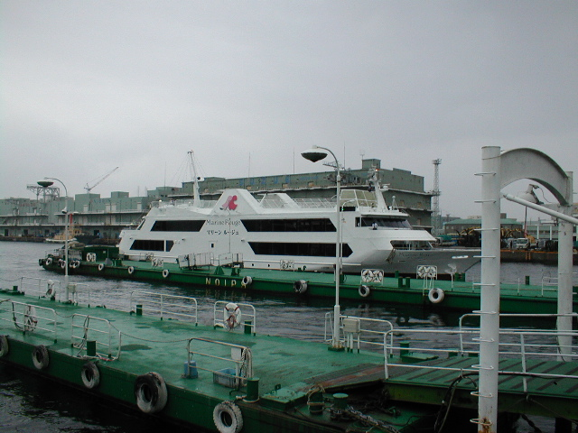
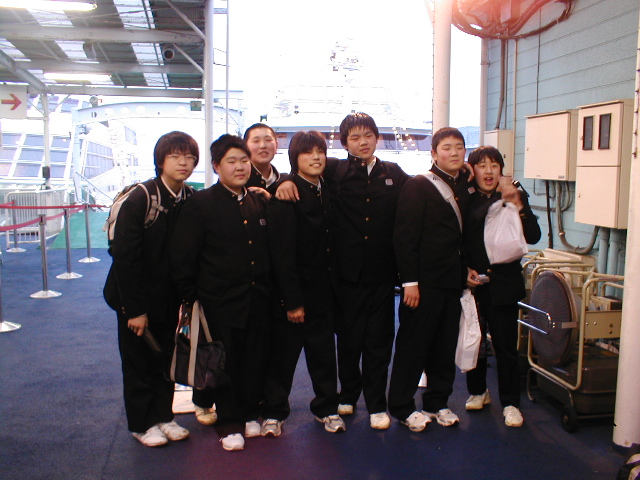
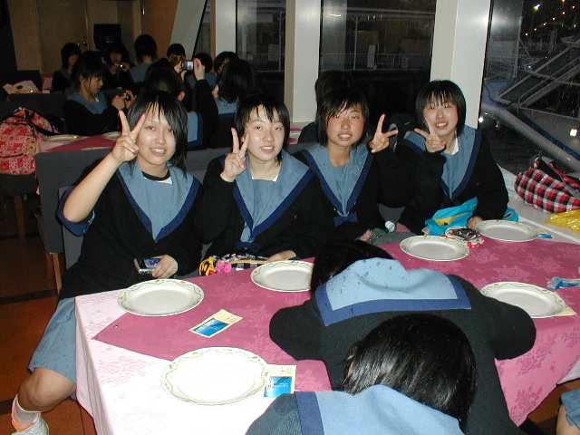

  
集合時間の１８：００には、５８名全員が山下公園の氷川丸
のところに集合し、クラスごとに「マリーンルージュ」に乗船して、横浜港ディナークルーズとなりました。
生徒の皆さんは、班別自主研修の疲れも
見せずに、元気です。
2009年04月21日
修 学旅行１日目【横浜港ディナークルーズ１】
posted by 原町三中情報管理者 at 18:17| 行事
| 
| 日 | 月 | 火 | 水 | 木 | 金 | 土 |
|---|---|---|---|---|---|---|
| 1 | 2 | 3 | ||||
| 4 | 5 | 6 | 7 | 8 | 9 | 10 |
| 11 | 12 | 13 | 14 | 15 | 16 | 17 |
| 18 | 19 | 20 | 21 | 22 | 23 | 24 |
| 25 | 26 | 27 | 28 | 29 | 30 |